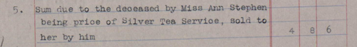
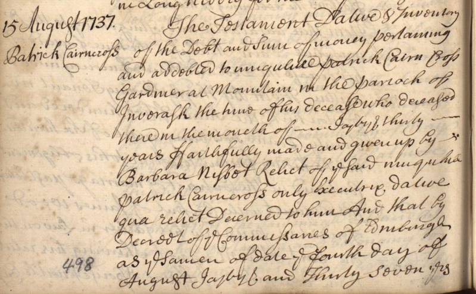
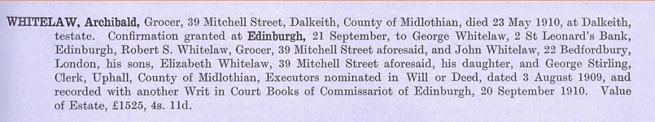
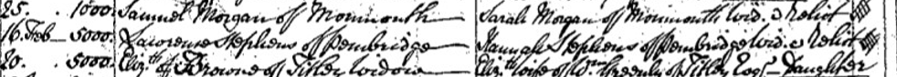
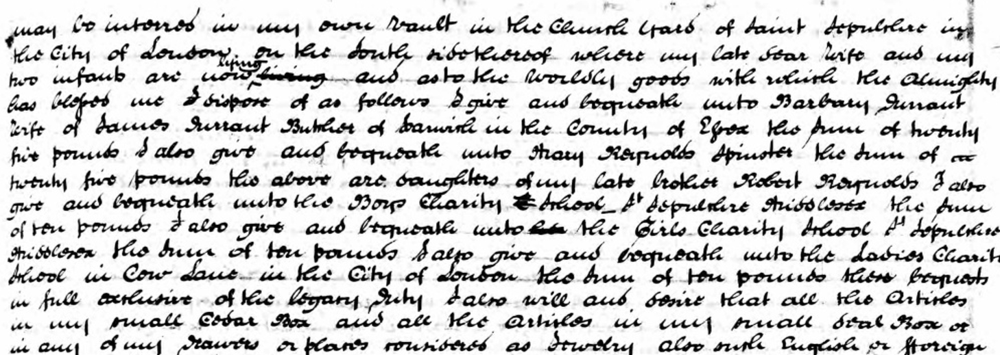
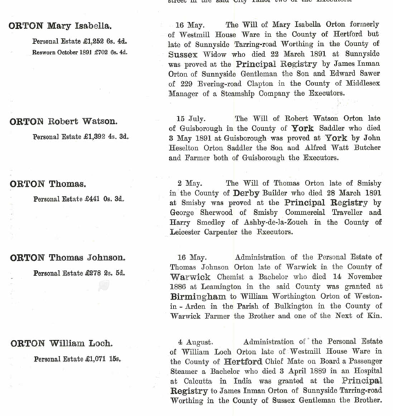

Silver tea services, widows, family addresses, charity bequests and an estate reaching from Calcutta back to England — probate records can put people back into family history.
FAMILY HISTORY NEWSLETTER · ISSUE 10 ·
Read online
What these records can reveal to the family historian
Birth, marriage and death records tell us when and where important events happened. Census returns put our ancestors into households.
But wills, testaments and inventories can do something rather different.
They can tell us who mattered to someone, what they owned, who owed them money, where their children had gone, which charities they supported — and occasionally what happened to the silver tea service.
That is why probate records can be such rewarding documents for the family historian.
Scotland and England — similar purpose, different language
The records on either side of the border do not look quite the same.
In Scotland, the word testament covers the documents involved in dealing with a deceased person’s estate. An inventory records the estate; a testament testamentar includes a will, while a testament dative deals with an estate where there was no will. Later records include confirmations and the Calendars of Confirmations and Inventories.
In England, we are more likely to encounter wills, grants of probate and letters of administration. From the nineteenth century, probate calendars become particularly useful summaries of names, addresses, occupations, executors and estate values.
The terminology differs, but the family historian is looking for much the same treasure:
people, relationships, occupations, addresses, possessions, money — and stories.
And our own family records provide some excellent examples.
A silver tea service — Henry Hinshelwood, 1923
Henry Hinshelwood was my 3× great-uncle.
He left us something approaching the ideal family-history combination: a settlement, an inventory of his estate and a later confirmation.
The inventory records cash and investments, but amongst all the financial detail is something much more tangible.
£4 8s 6d was still due for the price of a silver tea service sold by Henry to Miss Ann Stephen.

Henry Hinshelwood’s 1923 inventory records £4 8s 6d still due for the sale of a silver tea service.
That single entry does what a bare valuation never could. Suddenly there is an object we can picture, another person enters Henry’s story, and we have evidence of an ordinary transaction from his life.
His settlement adds still more: named beneficiaries, provision for children until they reached 21, and two personal legacies of £50.
An inventory may appear to be about money. For the family historian it can actually be about how somebody lived.
A gardener, his widow and a thousand merks — Patrick Cairncross, 1737
Patrick Cairncross was my 6× great-uncle.
He takes us back nearly two centuries and into very different language.
Patrick was a gardener at Mountain, Inveresk. His 1737 record is a testament dative and inventory, with his widow Barbara Nisbet described as his:
“only executrix dative qua relict”
—in other words, his widow acting as executrix of an estate where there was no will.

Patrick Cairncross’s 1737 testament dative names his widow Barbara Nisbet as “executrix dative qua relict”.
His inventory is interesting for another reason. Rather than providing us with a tempting list of household possessions, much of the value consisted of money owed to Patrick, including a principal sum of one thousand merks.
Inventories do not necessarily tell us what was sitting in an ancestor’s house. Sometimes they tell us about his financial relationships instead.
And the unfamiliar terminology is a useful reminder that Scottish testamentary records have their own language — one worth understanding rather than translating too quickly into English probate terms.
Four children — and an address in London — Archibald Whitelaw, 1910
Archibald Whitelaw was my cousin three times removed.
When this Scottish grocer died in 1910, his confirmation identifies members of the family involved in dealing with his estate.
The entry leads us to sons and a daughter, their occupations and their addresses — spreading the family from Dalkeith and Edinburgh all the way to London, where son John was at:
22 Bedfordbury, London.
The estate was valued at £1,525 4s 11d.

Archibald Whitelaw’s 1910 confirmation names family members, occupations and addresses stretching from Scotland to London.
For the family historian, this is one of probate’s great attractions.
A death can bring several members of a family together in one document and tell us where they had gone and what they were doing.
A probate calendar can therefore become an unexpectedly useful migration record.
No will — but still a story — Lawrence Stephens, 1798
Lawrence Stephens was Val’s 5× great-grandfather.
His story reminds us that probate research does not stop when there is no will.
After Lawrence died in 1798, his widow Hannah dealt with the administration of an estate valued at £5,000.

Administration of Lawrence Stephens’s estate in 1798 was granted to his widow Hannah; the estate was valued at £5,000.
The administration gives us the formal evidence, but a contemporary newspaper adds something much more human: Lawrence was reported to have died suddenly while eating his dinner.
That is a useful lesson in itself.
Probate records often work best when combined with other sources. One record tells us who administered the estate and what it was worth; another tells us something of the circumstances in which the family suddenly found itself dealing with that estate.
And, importantly, an ancestor who left no will may still have left valuable probate evidence.
Family, charity — and an unexpected echo — William Reynolds, 1826
William Reynolds was Val’s 4× great-grandfather.
His registered will, proved in 1826, does much more than distribute property.
As well as leaving his estate to his two sons, William made several charitable bequests:
£10 each to St Sepulchre Boys Charity School, St Sepulchre Girls Charity School and the Ladies Charity School in Cow Lane.
He also left £20 to each of the daughters of his late brother Robert.

William Reynolds’s 1826 will combines family bequests with gifts to three London charity schools.
For the family historian, the will works on several levels. It confirms family relationships, tells us something about the causes William chose to support, and gives us a glimpse of the social world around him.
There is also an intriguing family echo.
Christ’s Hospital was another historic London charity school founded in the City. It still maintains its centuries-old relationship with the City of London through the annual St Matthew’s Day tradition, when pupils return to London for the procession and civic events.
Generations later, William’s 5× great-grandson Peter George Hugh Reynolds attended Christ’s Hospital.
There is no suggestion that William’s charitable bequests caused that later connection. It is simply one of those coincidences that makes family history memorable: an ancestor supporting London charity schools in 1826, and a descendant many generations later becoming a pupil of one of the City’s best-known charitable foundations.
William’s will also identifies his nieces Mary and Barbara, daughters of Robert Reynolds, helping reconnect married women with their birth family.
A will can therefore reveal family structure, charitable interests and unexpected threads linking one generation to another.
Probate reaches all the way to Calcutta — William Loch Orton, 1891
William Loch Orton was Val’s 2× great-uncle.
He was described as:
“Chief Mate on Board a Passenger Steamer; Bachelor”
and died in a hospital in Calcutta in 1889.
Administration of his estate was eventually granted in England, with his brother involved in dealing with it.
On the same probate-calendar image we also have the entry for Mary Isabella Orton, whose estate was initially recorded at £1,252 6s 4d and later resworn at £702 6s 4d.

The 1891 probate calendar records William Loch Orton’s death in Calcutta and the administration of his estate, alongside Mary Isabella Orton’s resworn estate value.
One small calendar page therefore connects family relationships, changing addresses, maritime employment, India and the administration of estates back in England.
Probate records are supposedly about death.
For the family historian they frequently tell us where the living family had scattered.
Not every ancestor left a will, and not every inventory contains a fascinating list of possessions. Some probate records amount to little more than a few lines in a calendar.
But amongst them we may find:
children who had disappeared from view; married daughters under new surnames; occupations and addresses; debts and investments; household possessions; executors, friends and business associates; migration across Britain and overseas — and occasionally a silver tea service.
Certificates and census returns establish the framework of a family history.
Wills, testaments, inventories and administrations can help put some of the people back into it.